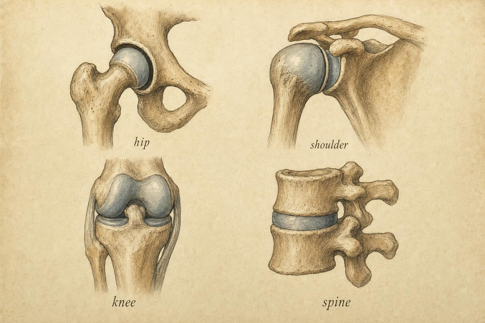
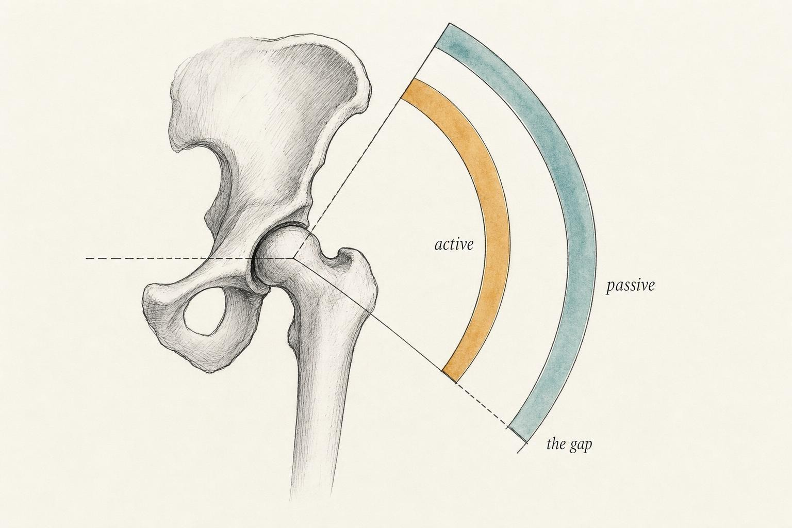

Honest Ranges of Motion: What Joints Can Actually Do
Why the textbook "normal" range of motion is a starting point, not a verdict on any single body.
Wren has been going to the same twice-weekly strength class for about a year, and for most of that year she has quietly compared her squat to the training partner next to her, a taller, longer-legged classmate who folds into a squat until the backs of his thighs meet his calves, heels flat, spine easy. Wren gets to roughly parallel, and there her hips simply stop moving forward, no matter how hard she tries to sink lower. Her lower back rounds, her heels want to lift off the floor, and the class instructor, watching from across the room, calls out the same cue every session: "sit deeper, chase full depth." Wren has tried. She has stretched her hip flexors most mornings for three months. Nothing has changed the shape of that stop.
Here is the uncomfortable truth this chapter is built around: the instruction Wren keeps receiving assumes that her hip and her training partner's hip are the same joint wearing different amounts of tightness, and that assumption is very often wrong. The difference between the two squats may have almost nothing to do with effort, and it may have very little to do with any stretching program. It may be the shape of the bone where Wren's femur meets her pelvis, a shape she did not choose and cannot cue away.
In the first chapter of this course, bones were treated as levers, rigid bars that rotate around a pivot. A lever, though, is only as useful as the pivot it swings around, and that pivot, the joint, has firm opinions about which arcs of motion it will permit. This chapter is about learning to read those opinions honestly, joint by joint, and about learning to tell the difference between a limit that is real and fixed and a limit that is temporary and workable. Wren's squat will be the thread running through this chapter, not because her hip is unusual, but because it is ordinary, and ordinary is exactly what a "normal" range of motion table quietly fails to capture.
From Textbook Normal to Honest Range
Open almost any clinical reference and a tidy table appears: hip flexion, about 120 degrees; knee flexion, about 135 degrees; shoulder abduction, about 180 degrees. These numbers are genuinely useful as a first orientation, but they are population summaries, and in everyday use they tend to carry more authority than they actually deserve. When Roaas and Andersson (1982) measured passive range of motion (ROM) in 210 hips belonging to healthy men aged 30 to 40, all drawn from a single city and a single narrow age band, using the technique recommended at the time by the American Academy of Orthopaedic Surgeons (AAOS), they found that their own results differed meaningfully from the reference figures printed in the standard texts of the era. Part of the gap, they suggested, came from measurement procedure and the difficulty of the technique itself. But they were equally clear that plain inter-individual variation, differences between one healthy body and the next, accounted for a real share of the discrepancy.
That phrase, inter-individual variation, is the whole chapter compressed into two words. A textbook "normal" range is the middle of a distribution, a statistical center of gravity, and no single person is the exact middle of every distribution at once. Wren is not the middle of the distribution her training partner belongs to, and he is not the middle of hers. The honest range is what a specific joint, in a specific body, doing a specific task, will actually permit on a given day. It is discovered through careful, patient observation, not read off a laminated chart taped to a gym wall. Once a learner stops asking "what is the correct range of motion for a hip?" and starts asking "what is this joint's honest range, and what, specifically, is limiting it?", a great many arguments about "proper depth" or "full range" quietly dissolve into much more answerable questions about anatomy.
It is worth sitting with how large that variation can be even within a single, carefully controlled sample. Roaas and Andersson were not comparing untrained office workers to elite athletes, or older adults to teenagers. Their 210 hips came from healthy men within a ten-year age band, measured with a standardized protocol by the same research team. Even under those tightly controlled conditions, the reference values in circulation at the time proved unreliable enough to be worth publishing a correction. If a "normal" figure can drift that much inside one deliberately narrow, homogeneous sample, it should give any learner real pause before treating a single number as a verdict on a specific person's joint, especially once age, sex, activity history, and skeletal shape are all allowed to vary freely, as they do in an ordinary strength class.
It also helps to understand where these tables come from in the first place, because the process itself explains why they travel poorly. A normative range of motion figure is typically built by measuring a sample of people, often a few dozen to a few hundred, averaging the results, and publishing the average alongside some measure of spread. The average is real. It describes that sample honestly. The trouble starts when the average is lifted out of its sample and handed to a learner as though it described everyone, everywhere, regardless of age, sex, training history, or the underlying shape of the bones involved. Roaas and Andersson's own sample was deliberately narrow, healthy men, one decade of adult life, one city, and it still produced numbers that disagreed with the references then in circulation. A wider, more diverse population would only be expected to spread the honest range further, not narrow it.
Four Joint Shapes, Four Sets of Permissions
Joints are not generic hinges bolted in at convenient spots along the skeleton. Their geometry dictates their vocabulary of motion, and learning that vocabulary is the fastest way to stop being surprised by what a given joint will and will not do. A short tour is worth taking, because the shape of the joint is the argument.
Ball-and-socket joints: the hip and the shoulder
Both the hip and the glenohumeral joint, the main joint of the shoulder, are ball-and-socket joints, yet they sit at opposite ends of a design trade-off often described in terms of joint congruence, meaning how closely the two articulating surfaces match each other's shape. The hip pairs a deep femoral head with a deep acetabulum, the cup-shaped socket in the pelvis, reinforced around its rim by a ring of cartilage called the labrum. That socket wraps around and swallows much of the ball. The arrangement is highly congruent, and high congruence buys enormous stability at the cost of some range of motion.
The shoulder makes close to the opposite bargain. Gasbarro, Bondow, and Debski (2017), reviewing the clinical anatomy of the unstable shoulder, describe a glenohumeral joint whose wide range of motion is achieved at the cost of inherent bony stability. The glenoid, the shoulder's version of a socket, is a shallow dish set against a comparatively large humeral head, more like a golf ball resting on a tee than a ball nested deep in a cup. Because the bones alone offer so little restraint, the joint depends heavily on soft-tissue stabilizers: the joint capsule, the glenohumeral ligaments, and the muscles and tendons of the rotator cuff working together. Same broad joint category, ball-and-socket, radically different permissions, because the geometry of the socket itself is different.
Hinge-like joints: the knee and the elbow
The knee and elbow are often described as simple hinges, and to a first approximation they mostly flex and extend within a single plane. The description deserves a hedge, though. The knee's rounded femoral condyles roll and glide across the tibia as the joint moves, and the joint permits a small automatic rotation, sometimes called the screw-home mechanism, as the knee approaches full extension. The elbow is really two joints sharing one capsule: the humeroulnar joint, built around a ridge on the humerus called the trochlea, and the humeroradial joint, built around a rounded prominence called the capitellum, and the two surfaces produce slightly different arcs for the ulna and the radius respectively. In both the knee and the elbow, the end-range in flexion is frequently set not by bone but by the sheer bulk of muscle and soft tissue being compressed together, the thigh meeting the calf, or the forearm meeting the upper arm, which is one reason knee flexion range tends to vary with limb girth from one person to the next.
Gliding joints: the intervertebral joints
Between each pair of vertebrae in the spine sit a pair of facet joints and, in most regions, an intervertebral disc, together permitting small gliding and tilting motions at each level. Individually these motions are tiny, but they sum across the whole column into meaningful flexion, extension, and rotation. This matters for a squat or a hip hinge more than it first appears, because, as a later section of this chapter will show in detail, the lumbar spine is perfectly willing to volunteer some of its own motion whenever a stubborn hip runs out of room.
Stepping back from the individual examples, the general principle worth carrying forward is the trade-off itself: congruent joints, meaning surfaces that fit each other closely, tend to buy stability and give up some range, while less congruent joints tend to buy range and give up some stability. Bone shape supplies what is sometimes called passive stability, the fit of the surfaces alone, independent of any muscle activity. Muscles and tendons crossing the joint supply active stability, tension that can be adjusted moment to moment as demands change. A congruent joint like the hip leans heavily on its passive, bony stability and asks comparatively less of its surrounding muscles to keep the joint together. An incongruent joint like the shoulder leans the other way, asking its muscles and capsule to do continuously what the bones alone cannot. Neither strategy is superior in the abstract. Each is well matched to what that joint is asked to do across a lifetime of ordinary use, and each carries a predictable cost that shows up the moment a learner tries to push the joint toward the other strategy's strengths.

What Actually Stops a Joint
When a joint reaches the end of its available arc, something physically stopped it there. That something falls into two broad families, and telling the two apart is one of the most useful skills a learner in this course can build.
Bony (hard) end-range
A bony end-range is produced by bone-on-bone contact, or close enough to it, such as the neck of the femur meeting the rim of the acetabulum, or the olecranon process of the ulna seating into its fossa at full elbow extension. It tends to feel abrupt and hard, arriving all at once, and it does not negotiate. No amount of stretching lengthens bone. Han and colleagues (2020) made this concrete using eight cadaveric hips and computer-based three-dimensional (3D) motion simulation built from computed tomography (CT) scans, testing seventeen different maneuvers on each specimen. They found that bony impingement, meaning direct bone-on-bone contact between the femur and the pelvis, was the true terminator of motion in specific, predictable positions: high abduction combined with flexion, and high flexion combined with adduction and internal rotation. In those configurations, the femoral neck simply ran out of room inside the pelvis.
Soft-tissue end-range
A soft-tissue end-range is set by tension rather than by contact: the joint capsule, the ligaments that reinforce it, and the muscles crossing the joint all drawing taut together. It tends to feel springier and to arrive more gradually than a bony block. Han and colleagues defined what they called soft-tissue restriction as the difference between the virtual bony-impingement range, meaning what the skeleton alone would permit if no soft tissue were present, and the range actually measured on the intact cadaveric specimen. In many hip positions that gap was substantial. The soft tissue stopped the joint well before the bones ever would have. Turley, Williams, Wellings, and Griffin (2012), using two independent experimental methods on cadaveric hips, mapped a closely related pattern: hip extension and flexion combined with adduction were limited primarily by soft tissue, while flexion alone and flexion combined with abduction placed the hip at genuine risk of bone-on-bone impingement.
The shoulder illustrates the soft-tissue mechanism especially clearly. Gasbarro and colleagues (2017) describe a glenohumeral capsule that stays lax through the middle portion of the joint's range and then progressively tightens as the joint nears its limit, acting something like a checkrein on a horse, gradually taking up slack rather than snapping taut all at once. There is very little bone available to stop the shoulder from moving; the capsule and ligaments do almost the entire job instead. This is exactly why separating the two families of end-range matters in practice, not just in theory. A hard end-range means the arc is architecturally fixed for that person, a genuine ceiling that no amount of patience will raise. A soft end-range means the limit lives in tissue that can, within real individual limits and over meaningfully long timescales, respond to consistent loading and gradual adaptation.
Turley and colleagues (2012) note a further wrinkle worth carrying forward: most everyday movements are not pure, single-plane motions like the flexion measured on a goniometer chart. A squat combines flexion with some degree of rotation and abduction or adduction depending on stance and foot position; a reach overhead combines shoulder flexion with rotation of the humerus. Because bony impingement in their cadaveric testing appeared specifically in certain combined positions rather than in any single plane of motion, the practical takeaway is that the same joint can behave as though it has a soft, forgiving end-range in one combination of movements and a hard, immovable one in another, only a few degrees away. A joint is not simply "tight" or "open." It is tight or open for a specific combination of directions, which is one more reason a single number on a chart cannot substitute for watching how a particular joint actually behaves during the particular task being asked of it.
Active Versus Passive: The Gap That Explains "Blocked"
Here is a distinction that resolves a great deal of confusion about why a lift can feel stuck even though nothing seems structurally wrong. Active range of motion is what a person's own muscles can move them through, unassisted. Passive range of motion is what an external force, a training partner, gravity, a strap, or a clinician's hand, can move a joint through. Gajdosik and Bohannon (1987), in their widely cited review of clinical goniometry, the measurement of joint angles, state the general rule plainly: active range of motion is normally less than passive range of motion.
Why should a gap exist at all? Reaching the far edge of a passive arc requires a muscle to produce meaningful force and coordination at a joint position where it often has very little mechanical advantage left, and frequently the muscle on the opposite side of the joint must simultaneously lengthen and fully relax at the same time. If the muscles at that extreme cannot produce enough force, or the opposing muscle cannot let go, the person stops moving before the tissue itself would have. The joint could technically travel farther; the person simply cannot get it there under their own power. That is precisely the sensation of a lift feeling blocked even though nothing structural has actually been reached: the person has arrived at the end of their active range while passive range still has real room to spare.
Gajdosik and Bohannon add a caution worth remembering every time a number is written down on a form. A goniometric measurement, a single figure describing how far a joint moved, reflects the joint arc only. It does not, by itself, explain the cause of a restriction. The same 90-degree reading could be produced by a tight muscle, a taut capsule, a genuine bony block, or protective guarding against pain, and the number alone cannot distinguish between any of them. Measurement answers "how much." It never answers "why" on its own, and treating a number as though it already contains its own explanation is a quiet, common mistake. The Joint Range Explorer above lets a learner feel this directly: switching between active and passive mode shows the active arc nested inside the larger passive one, ending sooner for reasons that have nothing to do with bone at all.

Range Is Task-Dependent
So far this chapter has spoken as though a joint has a range, a single number waiting to be discovered. It does not. Range of motion is task-dependent: the arc actually available at a joint depends on what the rest of the body is doing while that joint moves. Change the position of neighboring segments and the honest range changes right along with it.
The hip is the clearest case, and the reason cuts straight to the heart of squatting arguments like the one playing out for Wren and her training partner. Recall Han and colleagues' (2020) finding that bony impingement appeared specifically in flexion combined with adduction and internal rotation. Now consider what happens during a squat. As the femur flexes toward the torso, the exact combination of hip abduction, rotation, and pelvic tilt determines whether the femoral neck clears the rim of the acetabulum or runs directly into it. A hip that flexes generously with the thighs angled outward and the pelvis held neutral may run out of room the instant the stance narrows or the pelvis tips backward. Turley and colleagues (2012) mapped closely related territory: flexion combined with abduction risks true bony impingement, while other flexion tasks are governed mainly by soft tissue. The joint itself has not changed between one repetition and the next; the task has, and with it the structure doing the limiting.
The same principle holds well beyond the hip, even if the hip happens to be where it is easiest to see. An overhead press asks the shoulder for a large arc of flexion, but that arc only opens fully if the shoulder blade is free to rotate upward and if the ribcage is not pinned into an arched, flared position. Restrict the shoulder blade, and the same glenohumeral joint that moves generously in isolation will appear to stall well short of overhead, not because the ball-and-socket joint itself has changed, but because a neighboring segment stopped contributing its share. This is the same lesson the hip taught, applied to a different joint: a range of motion measurement taken in isolation, one joint moving on a table with everything else held still, can look nothing like the range that same joint contributes once it is asked to work inside a whole-body task with every neighboring segment moving too.
The pelvis borrows from the spine
Task-dependence has a close partner: neighboring joints quietly contribute motion that a learner may mistakenly credit entirely to the hip. Tully, Wagh, and Galea (2002), analyzing hip flexion using computer-aided video analysis in 22 young adults and 22 children, showed that the lumbar spine does not wait politely until the hip has finished moving before it gets involved. Lumbar motion occurs concurrently with hip flexion from the very start of the movement. On average, every 3 degrees of hip motion was accompanied by roughly 1 degree of lumbar motion, and the lumbar contribution grew larger as the hip approached its own limit. Their pointed conclusion was that clinical assessments of hip flexion routinely overestimate true hip joint range, because the measurement silently absorbs the spine's contribution into the total figure.
Kuo, Tully, and Galea (2009) extended this line of work to active standing hip-and-knee flexion in 34 healthy older adults and found that the lumbar spine supplied 26.6 percent, roughly 29 degrees, of the total thigh movement measured, again moving throughout the task rather than only kicking in near the end. Older adults in their sample showed less hip flexion overall and more variable hip-to-lumbar sharing than younger groups studied previously. The practical lesson lands directly on a squat like Wren's: when a person appears to gain a few extra degrees of depth, some of that gain may be lumbar flexion borrowed from the spine, quietly masquerading as hip flexion. This is the mechanical anatomy of what lifters often call the "butt wink." It is not a moral failing and it is not evidence of a mobility failure to feel ashamed of. It is a pelvis borrowing range from a spine because the hip's honest arc, for that particular task, has already been spent.
Why Wren's Hip Is Not Her Training Partner's Hip
It is worth pausing to ask a more basic question: why would two healthy adults, doing the same coached movement with the same effort, arrive at such different honest ranges in the first place? Some of the answer is soft tissue, and later chapters in this course spend real time on how muscle length and tension adapt with consistent training. But a meaningful part of the answer, especially at the hip, is simply the shape of the bones involved, a shape set well before either Wren or her training partner ever stepped into a gym.
The acetabulum, the socket portion of the hip joint, varies from person to person in its depth, its orientation, and how much of the femoral head it covers. So does the femoral neck, the short bridge of bone connecting the ball of the femur to its long shaft, which varies in its angle relative to the shaft and in how much it twists forward relative to the knee, a property called femoral anteversion. Nakahara, Takao, Sakai, Nishii, Yoshikawa, and Sugano (2011) analyzed three-dimensional CT-based models of 106 hip joints from older men and women and measured how far each hip could move in flexion, extension, and rotation before bony impingement occurred. They found meaningful differences, not only in the orientation of the acetabulum and the femoral neck between men and women, but in the actual shape of the bone around the joint, including the acetabular rim and the femoral neck itself. Those morphological differences translated directly into differences in range of motion before bony impingement, and the pattern held across all four directions of movement they tested. Nobody in that study did anything to their hips to earn a smaller or larger arc. The arc was already built into the bone, present well before any training history could act on it.
This is precisely the kind of variation that separates Wren's hip from her training partner's. If Wren's acetabulum happens to be a little deeper, or her femoral neck angle a little lower, or her degree of natural anteversion different from his, her femur will physically contact her pelvis at a shallower squat depth than his does, regardless of how much either of them stretches beforehand. None of this shows up on the outside of the body. It cannot be assessed by watching someone's flexibility during a warm-up, and it does not appear on a bathroom scale or a tape measure. It shows up only in how the joint actually behaves when it is asked to move, which is exactly why the honest range, discovered through careful observation of a specific joint doing a specific task, is a more useful concept for a learner to carry than a memorized number ever will be.
It is worth being precise about what this section is, and is not, claiming. It is not claiming that stretching, warm-up routines, or practice never change how a squat feels or looks. Soft-tissue length and motor control genuinely do adapt with consistent, appropriate training over time, and later chapters in this course return to that adaptation directly. What this section is claiming is narrower, and for a learner, considerably more important: some portion of the difference between two people's achievable depth is set by skeletal architecture that training cannot reshape. Mistaking that portion for a correctable flexibility deficit sets a person up to chase a target their own skeleton was never going to allow, and to feel as though they are failing at something that was never a fair contest to begin with.
When the Limit Is Pain
There is a third possibility this chapter has deliberately held back, and it changes how a learner should respond when they encounter it. Sometimes a joint stops moving not because of tissue tension and not because of bone meeting bone, but because of pain, arriving before either genuine mechanical limit has actually been reached. Naili, Stalman, Valentin, Skorpil, and Weidenhielm (2021) studied eight men, twelve hip joints in total, diagnosed with femoroacetabular impingement syndrome, a condition in which the hip's bony shapes predispose the joint to impingement, comparing each hip's CT-simulated bony-impingement range against its actual, clinically measured passive range, both before and after arthroscopic surgery. The two measurements correlated only loosely, and the CT-simulated, morphology-based range was consistently larger than what was actually observed clinically. In other words, the true, hypothetical bony limit sat well beyond the point where the person's motion actually stopped. The researchers concluded that range of motion in this group was restricted by pain rather than by mechanical, morphology-based impingement.
The applied lesson here is firm, and it is the ethical spine of this entire course. A restricted or painful range of motion is a signal, not a diagnosis a learner is equipped to make, and it is certainly not something to force through. When motion stops short accompanied by pain, or a range that used to be open closes down over time, or an end-feel seems wrong for the person and the task at hand, these are signs that warrant professional evaluation, not an invitation for more mobility drilling or heavier loading. This chapter exists to give a learner a working model of why honest ranges of motion differ from person to person, so that movement can be observed and discussed intelligently. It does not, and cannot, credential anyone to distinguish protective guarding from underlying pathology in a real person. Confidently pushing a joint past a pain limit is exactly the mistake this model is built to prevent.
The difference between the virtual ROM at the point of bony impingement and the initial ROM measured experimentally was termed as the soft-tissue restriction.
Han et al. (2020), on separating what bone forbids from what tissue merely resists
Reading a Joint Honestly
Put the pieces together and the result is a procedure, not a table. When a learner watches a joint reach the end of its arc, four questions asked in order will get further than any memorized number ever could.
First: is this the active edge or the passive edge? Did the person run out of strength and coordination, or did tissue and bone actually stop them from going any farther?
Second, if it is a true structural limit: is the end-feel soft, meaning springy and gradual and consistent with tissue, or hard, meaning abrupt and immediate and consistent with bone?
Third: is this arc even this joint's job in the first place, or is a neighboring structure, the lumbar spine, the pelvis, quietly contributing motion that is being miscredited to the joint under discussion?
And overriding all three: if pain is the limiter, the mechanical questions stop, and the conversation shifts toward a referral rather than a fix.
Notice what this procedure deliberately refuses to do. It never announces "the correct depth" or "full range" as a universal target, because those phrases assume a shared architecture that Roaas and Andersson (1982) already demonstrated does not exist even among healthy men of the same narrow age band living in the same city. The procedure replaces a number a learner might memorize with a question a learner can actually investigate in front of them. The honest range is the one this joint, on this task, in this particular body, actually has. And the levers introduced in the first chapter of this course now have realistic, individual arcs to swing through, rather than a single textbook arc assumed to apply equally to everyone.
Walking through a second example makes the four questions feel less abstract. Picture someone reaching overhead to place a box on a high shelf, and their arm stops well short of straight, elbow bent, torso leaning to compensate. Question one: is this active or passive? If a helper gently guides the same arm and it travels farther with the same person relaxed, the person ran out of active strength and control before the joint ran out of room, and the honest range is larger than what appeared during the unassisted reach. Question two, assuming a true structural limit is eventually found: does it arrive gradually, with a springy give, or abruptly, with a hard stop? A gradual, springy limit points toward capsule and muscle; an abrupt, hard one points toward bone or a mechanical block. Question three: is the shoulder joint even the one running out of room, or is a stiff thoracic spine and an immobile shoulder blade quietly capping the reach before the ball-and-socket joint itself is anywhere near its own limit? And overriding everything, question four: if the person describes pinching, sharp pain, or a catch partway through the reach, the mechanical questions stop immediately, and the honest next step is a referral, not a deeper investigation by a learner working through this course.
Case: Wren's Answer
Run Wren's situation through this chapter and the confusion mostly dissolves, not into a diagnosis, which is not this course's business to give, but into a specific, answerable question. The first thing worth noticing is what her stop feels like: firm, consistent, and not accompanied by pain. That description is far more consistent with a bony end-range than a soft-tissue one; Han and colleagues (2020) and Turley and colleagues (2012) both describe exactly this kind of abrupt, non-negotiable stop occurring in hip flexion positions where the femoral neck can contact the acetabular rim. Three months of consistent stretching producing no change in where the stop occurs is itself informative. Soft tissue that is genuinely limiting a range usually shows at least some gradual change with sustained, appropriate loading over that timeframe. Bone typically does not.
The second thing worth noticing is what her stop is not: it is not painful, and it has not been getting worse over time. Naili and colleagues (2021) remind us that pain arriving before a mechanical limit is a meaningfully different situation, one that calls for professional evaluation rather than more stretching. Wren's description does not sound like that pattern. It sounds like a hip that has quietly told her, consistently and without drama, exactly how much room it has for this particular task.
The third and final piece is what Nakahara and colleagues (2011) established about hip morphology directly: acetabular depth, femoral neck angle, and the degree of natural anteversion all vary from person to person, and that variation predicts real differences in range of motion before bony impingement occurs. Wren and her training partner may simply have differently shaped hips, and his happen to permit a deeper squat before bone meets bone. Nothing about that makes Wren's squat wrong, and nothing about it makes her training partner's squat more correct. It makes the phrase "chase full depth" a poor instruction for at least one of the two people receiving it, because "full" was never actually defined for the joint that has to do the moving.
None of this amounts to a diagnosis of Wren's hip, and this chapter is not qualified to offer one. If her stop had come with pain, had changed suddenly, or had grown more restricted over time, the honest and appropriate step would be a referral to a qualified clinician who could examine, and if needed image, the joint directly, not a chapter in a course explaining general anatomy. What Wren actually walks away with is not a number to chase. It is a better question to ask about her own body, and a clear sense of what a firm, painless, unchanging stop most likely represents, versus what would count as a sign that warrants professional evaluation instead.
Key Takeaways
- Textbook "normal" ranges are population midpoints; the honest range is what a specific joint permits on a specific task, discovered rather than memorized (Roaas & Andersson, 1982).
- Joint geometry sets the vocabulary of motion: the deep hip trades range for stability, the shallow shoulder trades stability for range (Gasbarro et al., 2017).
- End-ranges are bony (hard, bone-on-bone, non-negotiable) or soft-tissue (springy, tension-limited); Han et al. (2020) and Turley et al. (2012) map which hip positions produce which.
- Active range is normally smaller than passive range; the gap explains why a movement can feel "blocked" while the tissue could still travel farther (Gajdosik & Bohannon, 1987).
- Range of motion is task-dependent, and neighboring joints borrow motion. The lumbar spine contributes to apparent hip flexion from the very start of the movement (Tully et al., 2002; Kuo et al., 2009).
- Individual hip morphology, including acetabular depth and femoral neck angle, legitimately changes how far a joint can move before bone meets bone, independent of effort or stretching (Nakahara et al., 2011).
- When pain limits a range before any mechanical stop is reached, treat it as a sign that warrants professional evaluation, never as something to self-diagnose or force through (Naili et al., 2021).
This chapter established that joints have honest, individual arcs, and that the hip's arc in particular is exquisitely sensitive to task and to skeletal shape. Chapter 5 cashes this in directly, asking why squat depth varies so dramatically between individuals, and Chapter 9 builds the systematic account of anthropometry that turns "this person is built differently" from an excuse into a measurable, predictive framework.
References
Gajdosik, R. L., & Bohannon, R. W. (1987). Clinical measurement of range of motion: Review of goniometry emphasizing reliability and validity. Physical Therapy, 67(12), 1867-1872. https://doi.org/10.1093/ptj/67.12.1867
Gasbarro, G., Bondow, B., & Debski, R. (2017). Clinical anatomy and stabilizers of the glenohumeral joint. Annals of Joint, 2, 58. https://pmc.ncbi.nlm.nih.gov/articles/PMC5611901/
Han, S., Owens, V. L., Patel, R. V., Ismaily, S. K., Harrington, M. A., Incavo, S. J., & Noble, P. C. (2020). The continuum of hip range of motion: From soft-tissue restriction to bony impingement. Journal of Orthopaedic Research, 38(8), 1779-1786. https://doi.org/10.1002/jor.24594
Kuo, Y.-L., Tully, E. A., & Galea, M. P. (2009). Lumbofemoral rhythm during active hip flexion in standing in healthy older adults. Manual Therapy, 15(1), 88-92. https://doi.org/10.1016/j.math.2009.08.002
Naili, J. E., Stalman, A., Valentin, A., Skorpil, M., & Weidenhielm, L. (2021). Hip joint range of motion is restricted by pain rather than mechanical impingement in individuals with femoroacetabular impingement syndrome. Archives of Orthopaedic and Trauma Surgery, 142(8), 1985-1994. https://doi.org/10.1007/s00402-021-04185-4
Nakahara, I., Takao, M., Sakai, T., Nishii, T., Yoshikawa, H., & Sugano, N. (2011). Gender differences in 3D morphology and bony impingement of human hips. Journal of Orthopaedic Research, 29(3), 333-339. https://doi.org/10.1002/jor.21265
Roaas, A., & Andersson, G. B. J. (1982). Normal range of motion of the hip, knee and ankle joints in male subjects, 30-40 years of age. Acta Orthopaedica Scandinavica, 53(2), 205-208. https://doi.org/10.3109/17453678208992202
Tully, E. A., Wagh, P., & Galea, M. P. (2002). Lumbofemoral rhythm during hip flexion in young adults and children. Spine, 27(20), E432-E440. https://doi.org/10.1097/00007632-200210150-00013
Turley, G. A., Williams, M. A., Wellings, R. M., & Griffin, D. R. (2012). Evaluation of range of motion restriction within the hip joint. Medical & Biological Engineering & Computing, 51(4), 467-477. https://doi.org/10.1007/s11517-012-1016-3